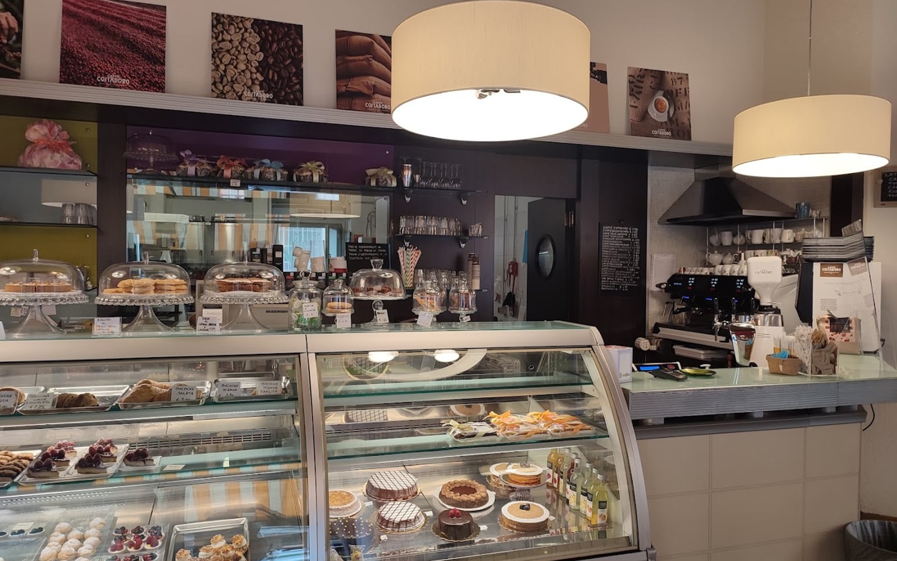
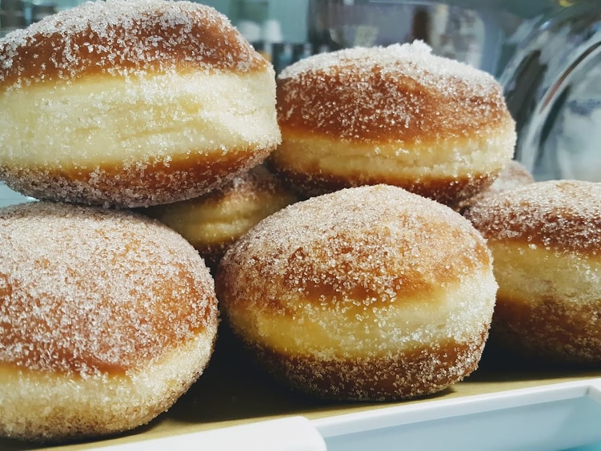
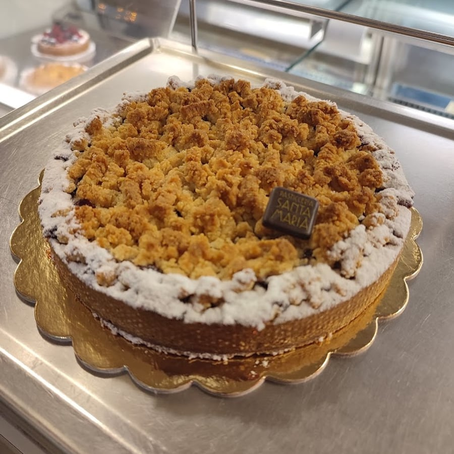
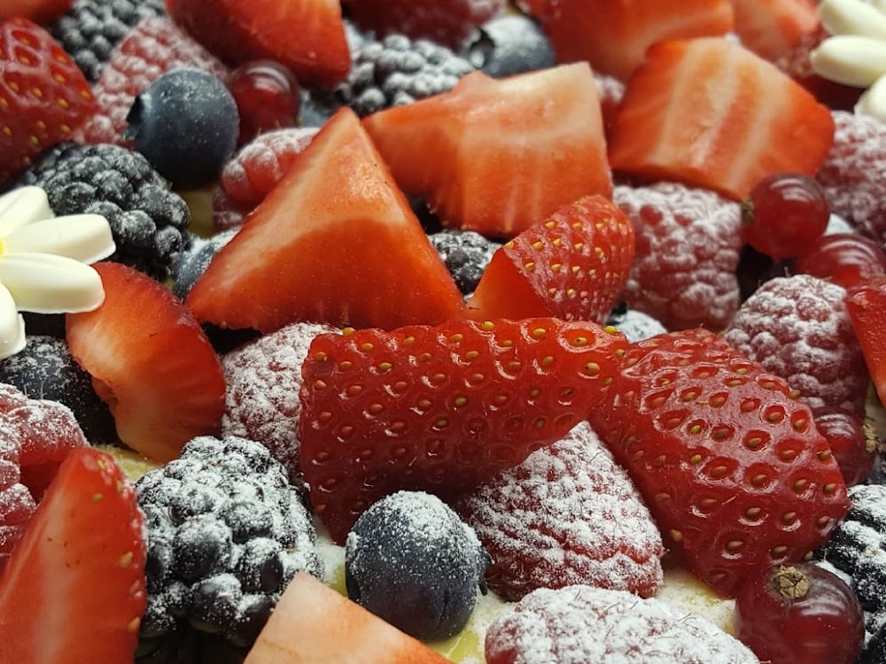
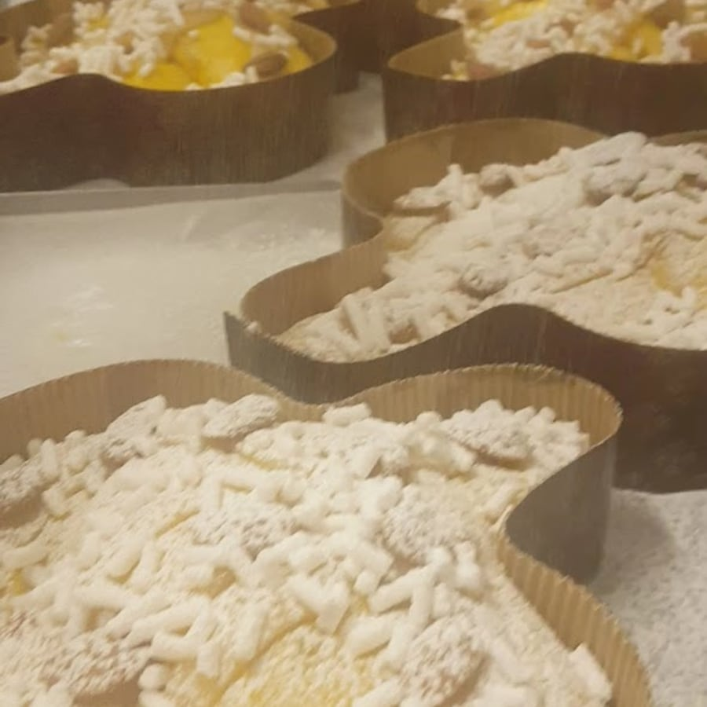
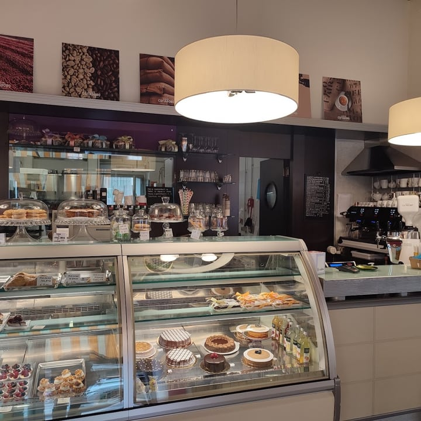
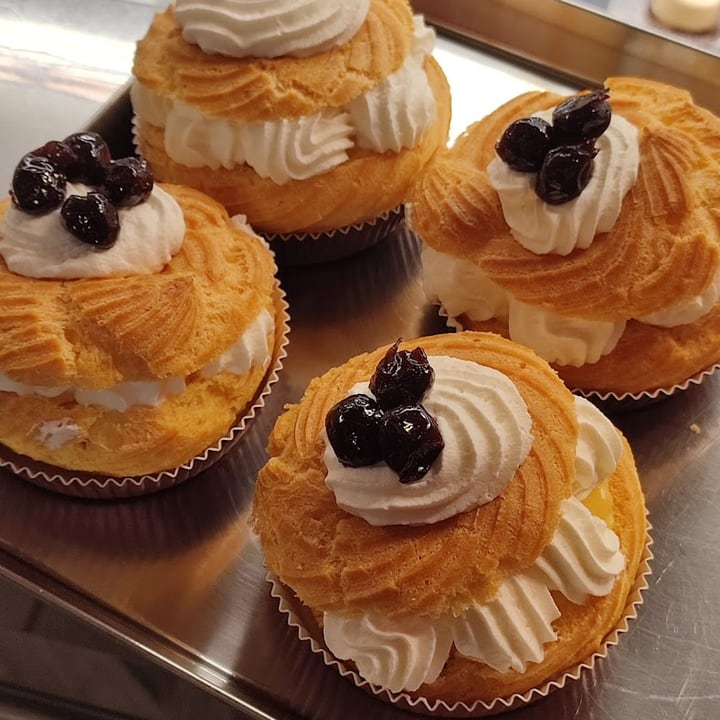
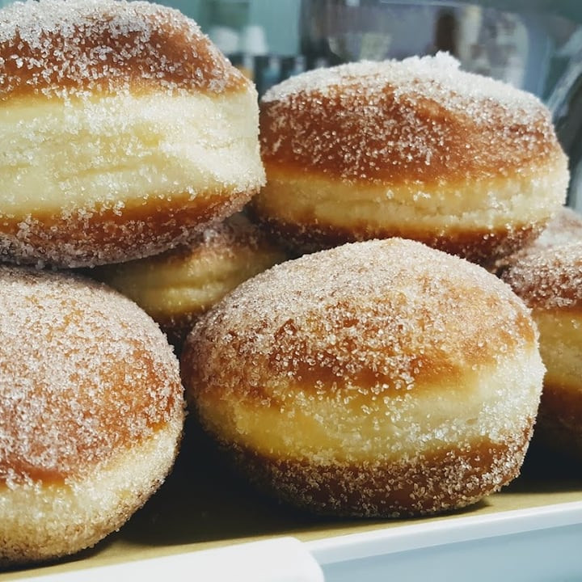
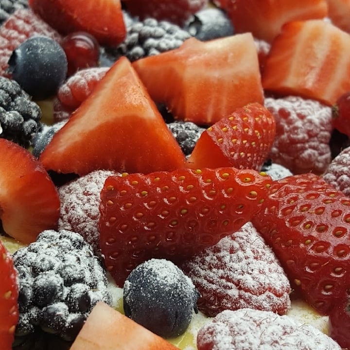

4,5 · 140 recensioni · Google
La classica pasticceria di Via San Siro
La brioche alla crema e il cappuccino, i grandi classici fatti con cura — e nel weekend i krapfen. Aperta solo la mattina, perché la colazione è un rito.
La colazione
La brioche alla crema appena sfornata, il croissant, la girella, il bignè: i classici della pasticceria realizzati con cura, seguendo la tradizione. Come fatti in casa — profumati, senza aromi né sofisticazioni.

Il rito del weekend
C'è chi cerca da anni un buon krapfen a Milano e lo trova qui: «perfetti». Bomboloni caldi e zuccherati, solo nel weekend — e nel periodo di carnevale arrivano anche i tortelli. Un piccolo appuntamento fisso.
Le torte su ordinazione
Dal pan di Spagna con crema Chantilly e frutti di bosco alle richieste speciali: le torte di Santa Maria hanno accompagnato feste e compleanni del quartiere — «fantastica, delicatissima», dicono. Basta passare o chiamare.


Come a casa
Qui si lavora rispettando la naturalezza dei prodotti: niente aromi, niente sofisticazioni inutili. Una saletta intima e luminosa, qualche tavolino, e la cura di chi fa dolci come li farebbe per casa propria.
Tutto fatto qui, ogni mattina. Perché una pasticceria di quartiere è un pezzetto di quartiere.

La pasticceria




Dicono di noi
«La classica pasticceria di quartiere dove sai che troverai sempre i grandi classici, realizzati con cura seguendo la tradizione.»
Clelia G. · Local Guide
«È tutto particolarmente buono, come fatto in casa: profumato, delizioso, senza aromi né alcuna sofisticazione innaturale.»
Emanuela S. · Google
«Da anni cercavo dei buoni krapfen a Milano e non li ho mai trovati come li fanno qui: sono davvero perfetti!»
Laura G. · Local Guide
«Torta pan di Spagna con crema Chantilly e frutti di bosco: fantastica, delicatissima. Felici di aver partecipato a quel giorno speciale.»
Patrizia C. · Google
Dove & orari
Via San Siro 6, 20149 Milano · zona De Angeli / Buonarroti, a due passi dalla M1.
—
| Lunedì | Chiuso |
|---|---|
| Martedì | 07:30–13:00 |
| Mercoledì | 07:30–13:00 |
| Giovedì | 07:30–13:00 |
| Venerdì | 07:30–13:00 |
| Sabato | 08:00–13:00 |
| Domenica | 08:00–13:00 |
La mappa è di Google: aprendola, Google riceve il tuo indirizzo IP e può usare i suoi cookie.
Domande frequenti
I grandi classici della pasticceria: brioche alla crema, croissant, girelle, bignè con la crema, pasticcini, crostate e torte. Con il cappuccino e il caffè. Tutto fatto con cura, come a casa.
Sì, nel weekend: i krapfen e i bomboloni del sabato e della domenica. E nel periodo di carnevale anche i tortelli.
Sì, per le occasioni: dal pan di Spagna con crema Chantilly e frutti di bosco alle richieste speciali. Basta passare o chiamare.
Solo la mattina: da martedì a venerdì 7:30–13:00; sabato e domenica 8:00–13:00. Lunedì chiuso.
In Via San Siro 6 a Milano, zona De Angeli / Buonarroti. Telefono 02 3656 2193.